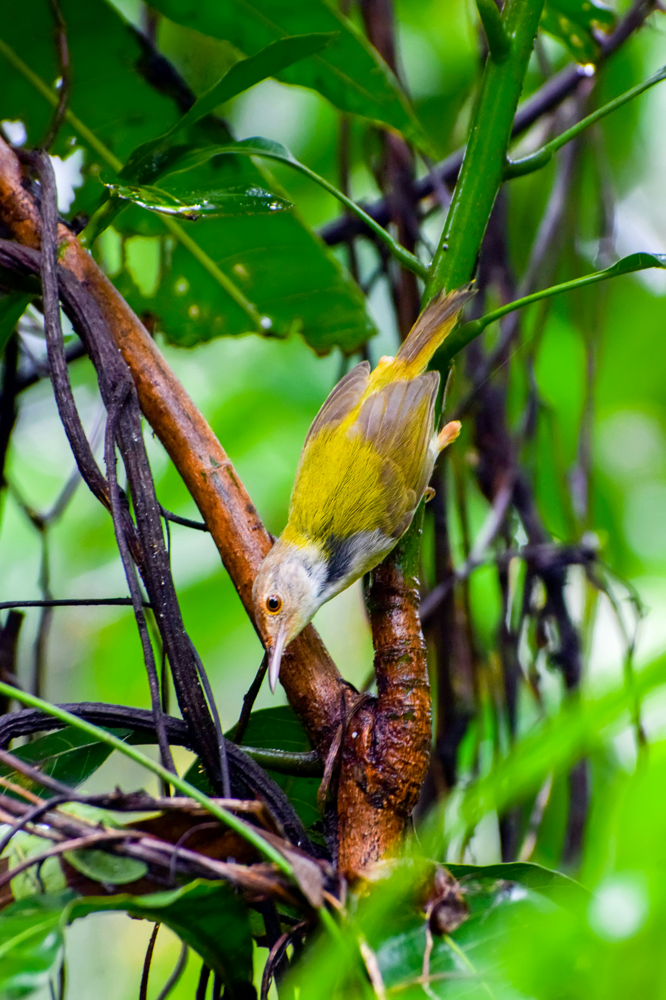

The Common Tailorbird is a tiny, active warbler named for its remarkable nest-building technique. It stitches or binds large leaves together with plant fibres and spider silk to form a protective structure around its nest. It has a green back, pale underparts, a rusty crown, and a long tail often held upright. It is extremely common in gardens, scrub, plantations, and urban areas.